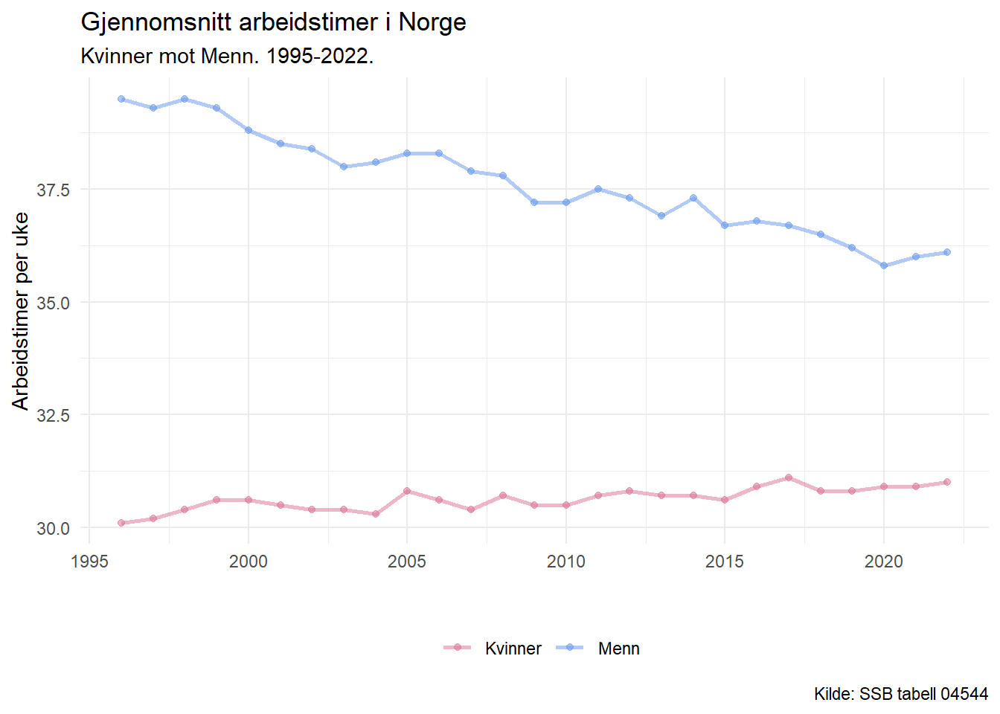

Empiriske kjønnsforskjeller i valg av arbeidstimer for menn og kvinner

Sammenhengen mellom lengde på betalt foreldrepermisjon og yrkesdeltakelse blant kvinner
Bruk datasettet til å lage to diagrammer som viser sammenhengen mellom lengde på betalt foreldrepermisjon og yrkesdeltakelse blant kvinner. I det ene diagrammet skal du bruke data som beskriver sysselsetting blant kvinner med barn i alderen 0-2 år (fem_emp_rate_0_2), og det andre skal du bruke data på kvinner med barn i alderen 6-14 år (fem_emp_rate_6_14).
Diskuter, basert på disse diagrammene og økonomisk teori, følgende påstand: «Gunstige permisjonsordninger ved fødsel sikrer høy yrkesdeltakelse blant kvinner på lang sikt»
Hvorfor høy yrkesdeltakelse blant norske kvinner og høye barnetall er viktig for den nordiske modellen
For at den nordiske modellen skal kunne fortsette trenger vi høy yrkesdeltakelse blant kvinner slik at vi fortsetter å få inn skattbar inntekt som hovedsakelig brukes til å finansiere alle godene som vi får tilbake av den. For eksempel pensjon, trygd når man havner utenfor arbeidsstyrken, gratis utdanning, eldreomsorg, og gratis helsetjenester for å nevne noen eksempler.
Barnetall er også veldig viktig for den nordiske modellen, for om vi får en skjevhet i befolknings-pyramiden hvor vi får et flertall av eldre mennesker i Norge enn nyfødte barn og mennesker i arbeidsstyrken så vil samfunnet slite med å finansiere godene som modellen gir oss. (Kanskje lag en befolknings-pyramide som eksempel.)
Utfordring 1.2
Sammenhengen mellom andelen av egenbetalinger og helsetjenesteforbruk pr. innbygger
Hvordan økt egenbetaling påvirker helsetjenesteforbruk og øker effektiviteten
---title: "Utfordring 1.1 og 1.2"subtitle: "Fakultet for biovitenskap, fiskeri og økonomi."date: last-modifieddate-format: "DD-MM-YYYY"author: "Kandidatnummer 13, SOK-2008, Høst 2023"format: htmlecho: falsetoc: truetoc-title: "Innholdsliste"code-fold: truecode-tools: truewarning: falsebibliography: referanse.bib---```{r}#| output: falserm(list =ls())library(tidyverse)library(rjstat)library(httr)library(readr)``````{r}# Importing data, this code is used to download tables from SSB and is based on the lectures of our teacher from last year in SOK-1004, Even S. Hvinden.url <-"https://data.ssb.no/api/v0/no/table/04544/"query <-'{ "query": [ { "code": "Kjonn", "selection": { "filter": "item", "values": [ "1", "2" ] } }, { "code": "Yrkesstatus", "selection": { "filter": "item", "values": [ "00" ] } } ], "response": { "format": "json-stat2" }}'hent_indeks.tmp <- url %>%POST(body = query, encode ="json")df <- hent_indeks.tmp %>%content("text") %>%fromJSONstat() %>%as_tibble()``````{r}# Importing the data for women based on generosity of parental leave and womens employment ratio in 24 OECD (Organization for Economic Cooperation and Development) countrieswomen <-read_delim("https://raw.githubusercontent.com/uit-sok-2008-h23/uit-sok-2008-h23.github.io/main/assets/women.csv", delim =";", escape_double =FALSE, trim_ws =TRUE)# Removing a list, query and the url to free up memory since it is not needed anymorerm(hent_indeks.tmp, query, url)``````{r}# Small datamanipulation with dplyr, pivoting some values for plotting purpose, changing some names and making the year column numeric# The arrange makes so the output of the data will go ascending from the first observation of yeardf<-df %>%pivot_wider(names_from = statistikkvariabel, values_from = value) %>%rename(arbeidstid_pr_uke ='Faktisk arbeidstid (timer per uke)') %>%transmute(year =as.numeric(år), sex = kjønn, arbeidstid_pr_uke) %>%arrange(year)```# Utfordring 1.1## Empiriske kjønnsforskjeller i valg av arbeidstimer for menn og kvinner```{r}# Saving some colors to use for the plotcolours <-c("Kvinner"="palevioletred", "Menn"="cornflowerblue")# Making a plot to show the arithmetic mean of women vs men working weekly in Norway.df %>%ggplot(aes(x=year, y=arbeidstid_pr_uke, color=sex))+geom_line(linewidth=1, alpha=0.5)+geom_point(alpha=0.5)+theme_minimal()+theme(legend.position ="bottom")+labs(title="Gjennomsnitt arbeidstimer i Norge", subtitle="Kvinner mot Menn. 1995-2022.", y="Arbeidstimer per uke", x="", caption ="Kilde: SSB tabell 04544",color="" )+scale_colour_manual(values = colours)```## Sammenhengen mellom lengde på betalt foreldrepermisjon og yrkesdeltakelse blant kvinnerBruk datasettet til å lage to diagrammer som viser sammenhengen mellom lengde på betalt foreldrepermisjon og yrkesdeltakelse blant kvinner. I det ene diagrammet skal du bruke data som beskriver sysselsetting blant kvinner med barn i alderen 0-2 år (fem_emp_rate_0_2), og det andre skal du bruke data på kvinner med barn i alderen 6-14 år (fem_emp_rate_6_14).Diskuter, basert på disse diagrammene og økonomisk teori, følgende påstand: «Gunstige permisjonsordninger ved fødsel sikrer høy yrkesdeltakelse blant kvinner på lang sikt»```{r}colours_country <-c("palevioletred", "palevioletred","palevioletred", "palevioletred","cornflowerblue", "palevioletred","cornflowerblue", "palevioletred","palevioletred", "palevioletred","palevioletred", "palevioletred","palevioletred", "palevioletred","palevioletred", "palevioletred","palevioletred", "palevioletred","palevioletred", "palevioletred","palevioletred", "palevioletred","palevioletred", "palevioletred")# Create a named vector for colorscolours_country_named <-setNames(colours_country, (women$country))# Making a plot to show the employment rate of women with children 0-2women %>%ggplot(aes(x =reorder(country, +fem_emp_rate_0_2), y=fem_emp_rate_0_2))+geom_col(aes(fill=country), alpha=0.9, width =0.5)+theme_minimal()+theme(legend.position ="none")+labs(title="Kvinnelig arbeidsrate i 24 OECD land", subtitle="Med barn mellom 0-2 år.", y="Usikker på hva y-verdien viser lmao", x="", caption ="Kilde: OECD",color="" )+scale_x_discrete(guide =guide_axis(angle=45))+scale_fill_manual(values = colours_country_named)``````{r}# Making a plot to show the employment rate of women with children 6-14women %>%ggplot(aes(x =reorder(country, +fem_emp_rate_6_14), y=fem_emp_rate_6_14))+geom_col(aes(fill=country), alpha=0.9, width =0.5)+theme_minimal()+theme(legend.position ="none")+labs(title="Kvinnelig arbeidsrate i 24 OECD land", subtitle="Med barn mellom 6-14 år.", y="Usikker på hva y-verdien viser lmao", x="", caption ="Kilde: OECD",color="" )+scale_x_discrete(guide =guide_axis(angle=45))+scale_fill_manual(values = colours_country_named)```## Hvorfor høy yrkesdeltakelse blant norske kvinner og høye barnetall er viktig for den nordiske modellenFor at den nordiske modellen skal kunne fortsette trenger vi høy yrkesdeltakelse blant kvinner slik at vi fortsetter å få inn skattbar inntekt som hovedsakelig brukes til å finansiere alle godene som vi får tilbake av den. For eksempel pensjon, trygd når man havner utenfor arbeidsstyrken, gratis utdanning, eldreomsorg, og gratis helsetjenester for å nevne noen eksempler.Barnetall er også veldig viktig for den nordiske modellen, for om vi får en skjevhet i befolknings-pyramiden hvor vi får et flertall av eldre mennesker i Norge enn nyfødte barn og mennesker i arbeidsstyrken så vil samfunnet slite med å finansiere godene som modellen gir oss. (Kanskje lag en befolknings-pyramide som eksempel.)# Utfordring 1.2## Sammenhengen mellom andelen av egenbetalinger og helsetjenesteforbruk pr. innbygger## Hvordan økt egenbetaling påvirker helsetjenesteforbruk og øker effektiviteten## Fordelingseffekter av økte egenandeler# Appendix[ChatGPT forespørsel om endring av farger til søyler](https://chat.openai.com/share/37e54a43-9162-4396-a50c-90e3a005110b) (Endte opp med å bruke colours_country_named \<- setNames(colours_country, sort(unique(women\$country))) )# Referanser